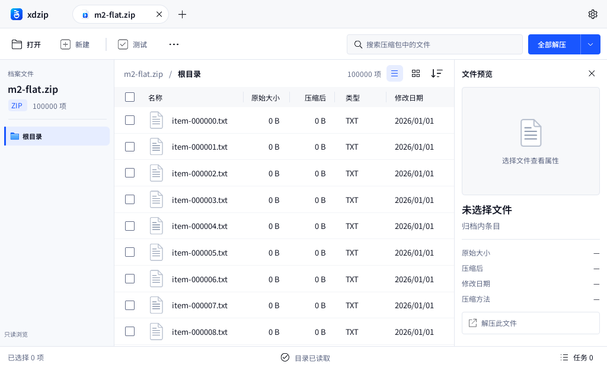
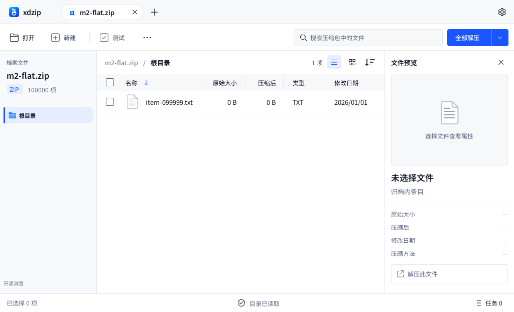
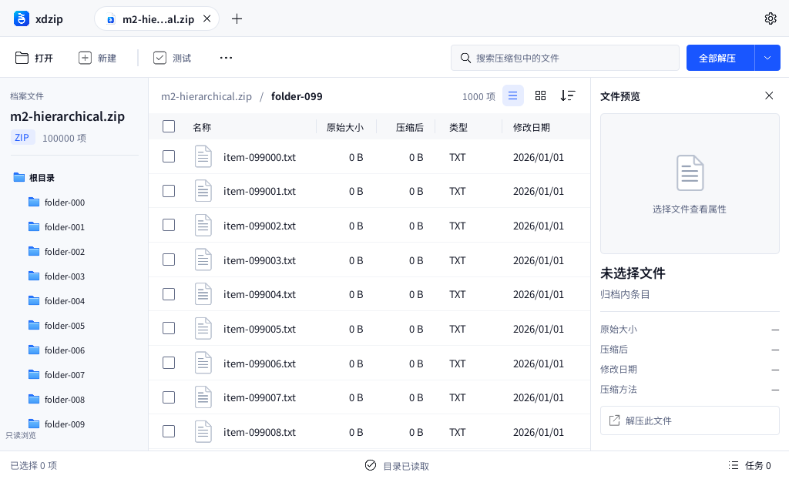

xdzip — M2 实际 Qt 截图
M2 开发与自动化验收完成。实现提交 a40dc72，三平台核心与 Qt 流程全部通过。下载 Apple Silicon 开发工件，包内 xdzip-macos-arm64.zip 解压得到 xdzip.app。
十万条真实元数据、最新查询生效、来源变化使旧列表失效。macOS ARM64 CI 的 Qt 离屏完整加载实测 2.06 秒，约 55 个可见单元格委托；该场景峰值约 230 MiB。实际桌面操作与输入法仍待人工验收，真实解压属于 M3。
真实 ZIP／ZIP64 数据经 Rust 运行时读取，在 Qt 6.8.2 中展示。截图环境为 Linux x86_64、offscreen / software、DPR 1；窗口逻辑尺寸 1024 × 622。这里只记录实际实现，人工验收入口见 M2 验收文档。
完整显示十万条物理记录

当前目录全量显示，内部传输批次不出现为产品分页。
连续搜索只提交最新结果

过期查询不会覆盖最新搜索与排序意图。
分层导航与直属文件

普通目录显示直属项；递归搜索结果保留归档内完整路径。